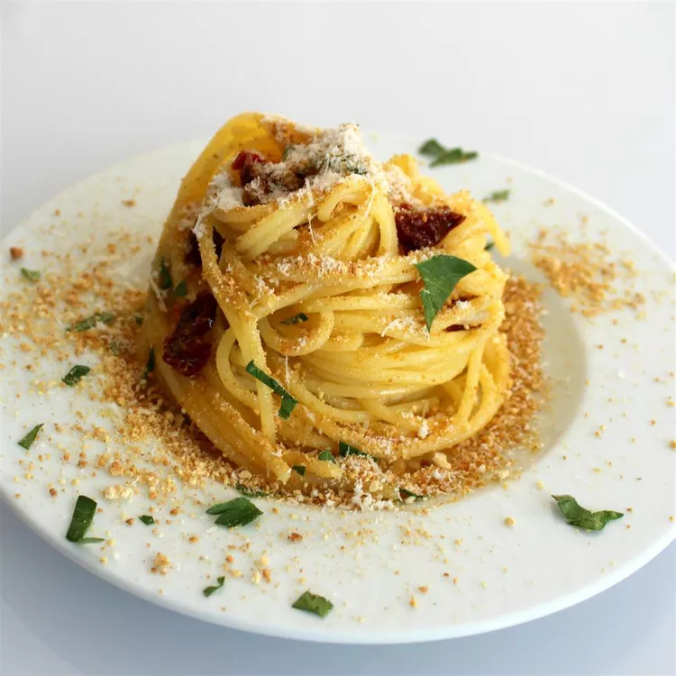

Sicillian Spaghetti
Home

Description
This anchovy pasta is quick, easy and very tasty. If you love anchovies and pasta, this recipe is for you. Serve with crusty Italian bread, if desired.
Ingredients
- 1 lbs Spaghetti
- 4 tbsp olive oil
- 2 ounces canned anchovies
- 3 cloves garlic
- 1 cup of chopped parsley
- 4 tbsp of Parmsean
Steps
- Bring a large pot of lightly salted water to a boil. Add pasta and cook for 8 to 10 minutes or until al dente; drain.
- Meanwhile, heat olive oil in a medium skillet over medium heat. Add anchovies and garlic; cook and stir continuously until anchovies sizzle and garlic is fragrant, about 2 minutes.
- Stir in bread crumbs and turn off heat. Stir in parsley and pepper.
- Toss anchovy sauce with hot pasta and sprinkle with Parmesan cheese; serve.